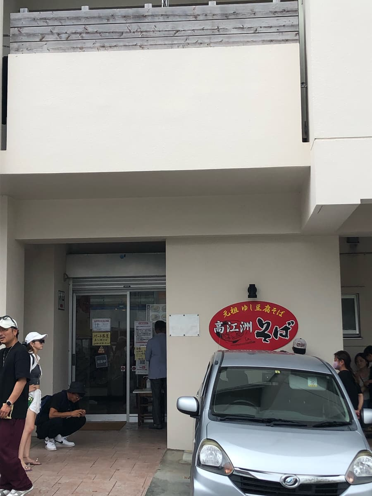
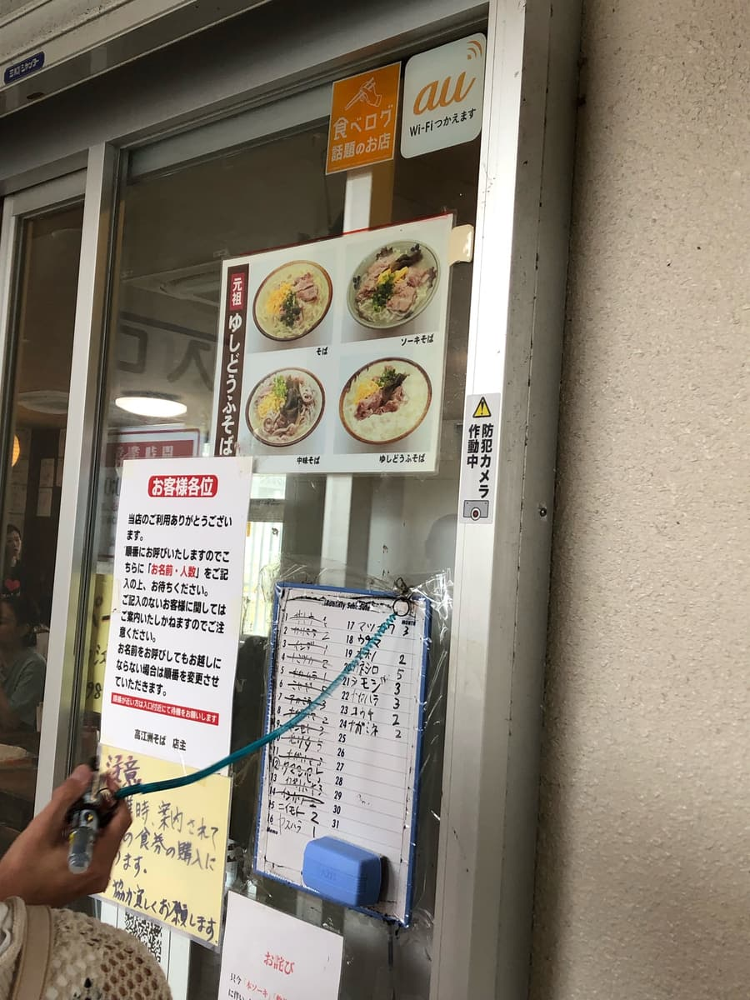
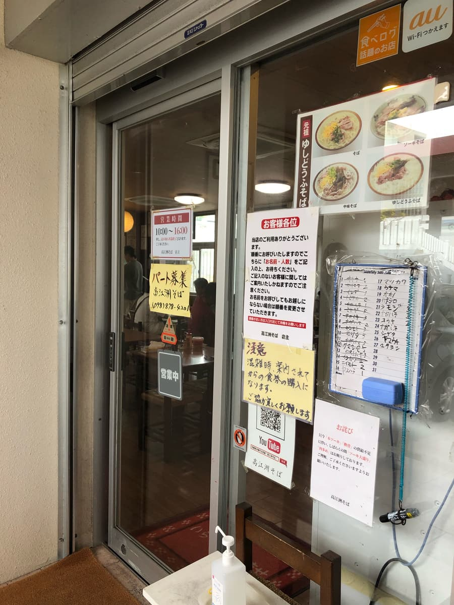
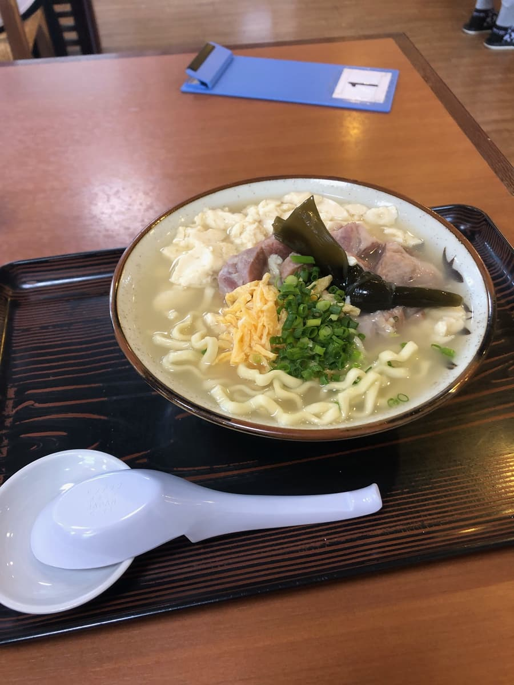

在管線通沿線附近的這家店，2023年9月吃的😁
前幾天在同樣位於管線通沿線（宜野灣市）的「介そば」吃完回程，發現了這家高江洲そば，心想「下次去這裡吧」，於是這次來了ｗｗ

從管線通稍微往裡走就有店，也有停車場，但雖然是中午時段，竟然客滿停不進去(;^ω^)
而且入口附近還排著很多客人！！可見是人氣店。
「說不定是水準很高的沖繩麵」期待值上升🤗
我開著警示燈在停車場等車位空出來。過了一會兒吃完的客人離開，終於停好車了😊
但是，這次要排隊等候(;^ω^)
外面有幾個可以坐的長椅，坐著年長的人，我分不清是吃完的人在外面休息，還是在等候，所以詢問了一下。
結果入口有一塊白板，是在上面寫名字的方式。於是我走到入口寫上名字。

排隊等候了一陣子，終於輪到進入店內。是用設置在入口附近的售票機購買的方式。
這家我也是沒有事先調查就來的，不過入口寫著「元祖沖繩嫩豆腐麵」，所以決定點沖繩嫩豆腐麵。


配料有蔥、蛋、細碎的排骨肉、結昆布（クーブ）、沖繩嫩豆腐
昆布讓我想起名護市的「宮里そば」，笑
份量我點了「大碗」，但覺得碗偏小（中碗尺寸？）
售票機上嫩豆腐麵有「特大」「大」「中」，所以雖然說是「大」，可能是其他店的「中」尺寸。
先試試湯頭😊 「咦？是什麼為底？」，味道不太分辨得出來(;^ω^) 舌頭不夠靈敏，抱歉(;^ω^) 我覺得是非常溫和的清爽系。我上網查到是「使用豬骨、柴魚、昆布的清爽鹽味系湯頭」，不過因為也放了沖繩嫩豆腐，所以也能感受到嫩豆腐汁的味道。
麵條是中粗的捲麵，偏軟。和清爽的湯頭一樣，其他配料也是清爽的調味。
評分（9分/15分）：就是很普通的好吃，不過看到排隊的客人，期待值升高、把標準抬高了呢^^; 似乎是非常受歡迎的店，要不要試試元祖沖繩嫩豆腐麵呢？
麵：★★★☆☆（3）
湯頭：★★★☆☆（3）
配料：★★★☆☆（3）